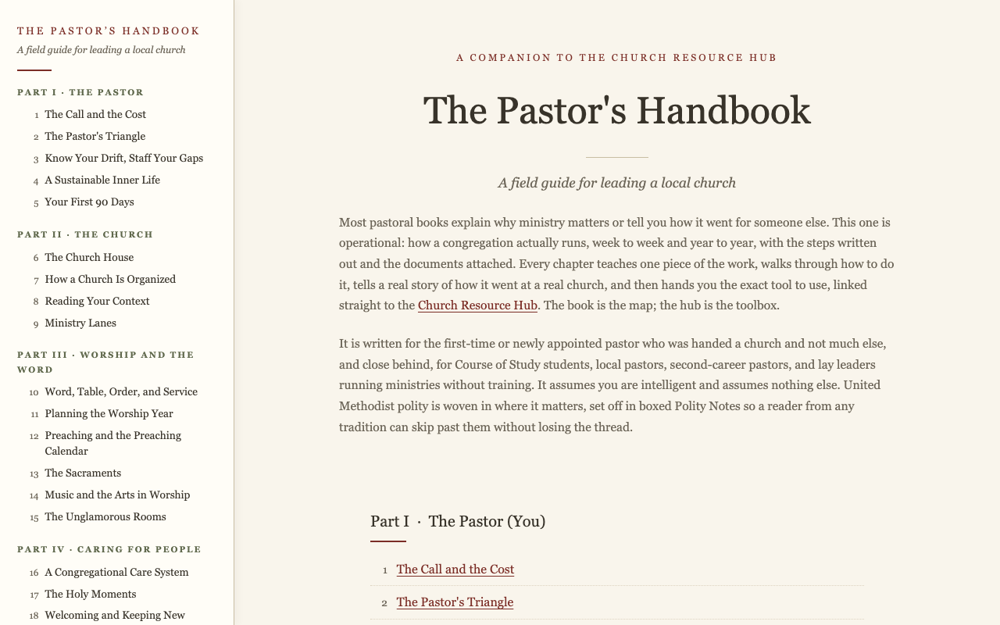

For First-Time Pastors
The Pastor's Handbook
For pastors in a first appointment and people new to ministry.
A digital field guide for leading a local church, written for first-time and newly appointed pastors, Course of Study students, and workshop cohorts, and for anyone stepping into ministry without training. Thirty-four chapters across eight parts walk the whole job, from the pastor's own call and inner life through worship, care, discipleship, missions, money, and leading change, each chapter teaching one piece of the work in plain language, telling a true story of how it went at a real church, and ending with concrete steps.
How it was written the frameworks in it are one pastor's own, worked out over fifteen years of doing the job, and the content of every chapter came out of real experience and personal documents. An AI assistant drafted against the lived experience and personal writings to create a steady structure across all thirty-four chapters. This document is created by Claude out of hundreds of thousands of words written over fifteen years regarding practical ministry. Each chapter has been read and revised for accuracy.
How it connects every "Grab the tools" list in the handbook points to a live card in the hub. The book tells you what the tool is for; the hub hands it to you.
Read the Handbook